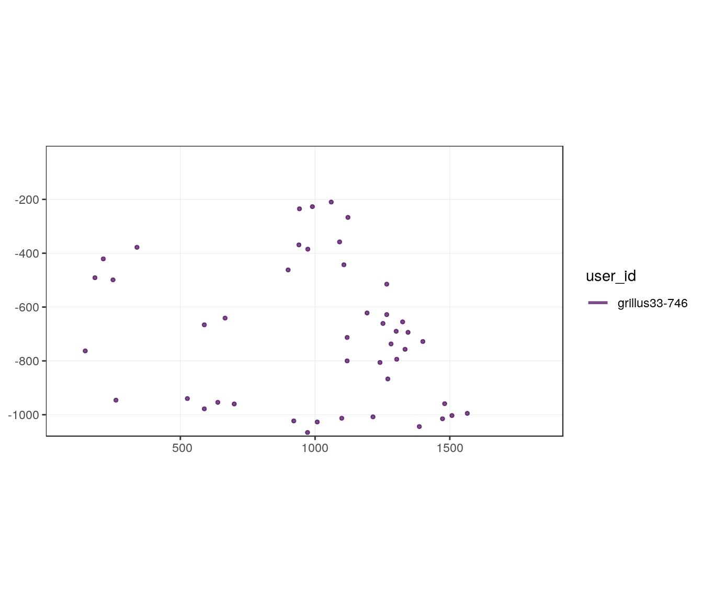
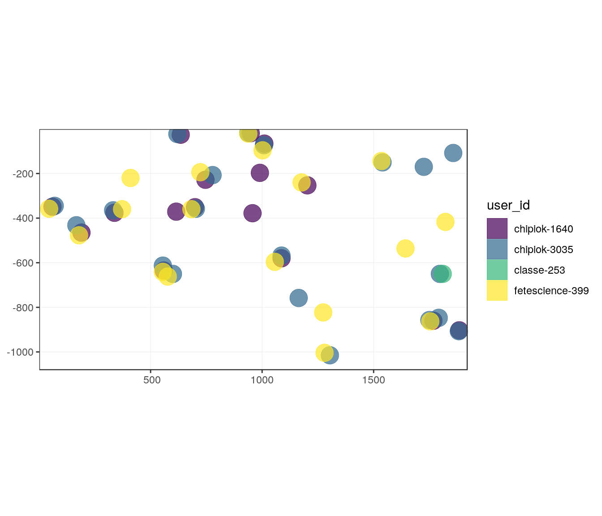
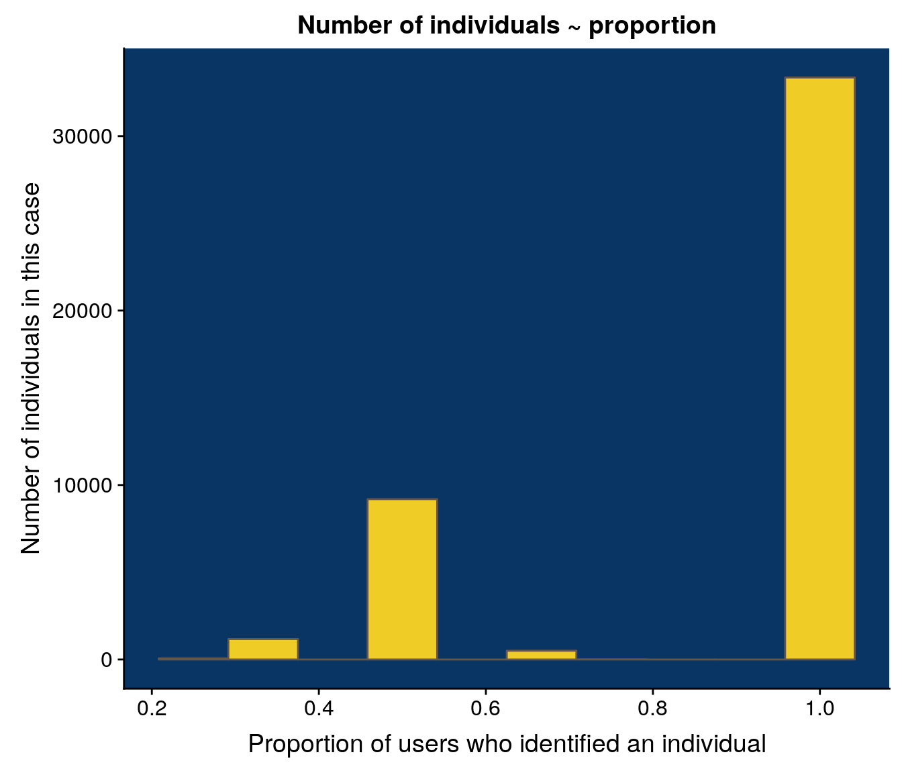

Chapter 4 Exploration of “Pycnogonide” data
4.1 Packages
library(dplyr)
library(lubridate)
library(tidyr)
library(ggplot2)
# devtools::install_github("r-spatial/sf")
library(sf)
library(raster)
library(fasterize)
library(igraph)
library(rasterVis)
library(cowplot)
library(deeptools)
# devtools::document()
# devtools::document()
# devtools::load_all(here::here(""))4.2 Colours
blue <- "#093564"
yellow <- "#efcc26"
grey <- "#675546"4.3 Load data
# load data
export_file <- system.file("data_orig/export_last.csv", package = "deeptools")
liste_photo <- system.file("data_orig/liste_photo.txt", package = "deeptools")4.4 Prepare data
- Cleaning of species names to be easily usable
- Add user_id combining username and date of image analysis just in case a user sees the same image two times.
mission2 <- readr::read_csv(export_file) %>%
dplyr::select(-comment) %>%
tidyr::extract(name,
into = "datetime", regex = "_([[:digit:]]+).",
remove = FALSE
) %>%
mutate(datetime = ymd_hms(datetime, tz = "UTC")) %>%
# clean names of species
mutate(name_fr_clean = thinkr::clean_vec(name_fr, unique = FALSE)) %>%
group_by(username) %>%
mutate(
user_id = paste(username, as.character(as.numeric(as.factor(datDeb))), sep = "-")
) %>%
ungroup()#> Parsed with column specification:
#> cols(
#> id = col_integer(),
#> image_id = col_integer(),
#> name = col_character(),
#> username = col_character(),
#> userlevel = col_integer(),
#> comment = col_character(),
#> datDeb = col_datetime(format = ""),
#> datFin = col_datetime(format = ""),
#> obs_code = col_character(),
#> name_fr = col_character(),
#> pos1x = col_integer(),
#> pos1y = col_integer(),
#> pos2x = col_integer(),
#> pos2y = col_integer(),
#> length = col_integer(),
#> middle_x = col_integer(),
#> middle_y = col_integer(),
#> polygon_values = col_character()
#> )#> Warning in rbind(names(probs), probs_f): number of columns of result is not
#> a multiple of vector length (arg 1)#> Warning: 305088 parsing failures.
#> row # A tibble: 5 x 5 col row col expected actual file expected <int> <chr> <chr> <chr> <chr> actual 1 100288 pos2x an integ… NULL '/usr/local/lib/R/site-library/deeptools… file 2 100288 pos2y an integ… NULL '/usr/local/lib/R/site-library/deeptools… row 3 100288 length an integ… NULL '/usr/local/lib/R/site-library/deeptools… col 4 100288 middle… an integ… NULL '/usr/local/lib/R/site-library/deeptools… expected 5 100288 middle… an integ… NULL '/usr/local/lib/R/site-library/deeptools…
#> ... ................. ... ........................................................................... ........ ........................................................................... ...... ........................................................................... .... ........................................................................... ... ........................................................................... ... ........................................................................... ........ ...........................................................................
#> See problems(...) for more details.# Separate observatory dataset
mission2_MAR <- mission2 %>% filter(obs_code == "MAR")
mission2_ONC <- mission2 %>% filter(obs_code == "JDF")4.5 Extraction of “pycnogonide”
# Filter on Buccinide only
ONC2_pyc <- mission2_ONC %>%
filter(name_fr_clean == "pycnogonide")
# Filter and transform as spatial data
ONC2_pyc_carto <- mission2_ONC %>%
to_carto(name_fr_clean, "pycnogonide")4.6 Exploration of annotations
4.6.1 Users
ONC2_pyc %>%
count(username) %>%
arrange(desc(n))#> # A tibble: 4 x 2
#> username n
#> <chr> <int>
#> 1 chipiok 45695
#> 2 grillus33 2277
#> 3 fetescience 807
#> 4 classe 6724.6.2 Images
- Number of annotations by image
ONC2_pyc %>%
count(image_id) %>%
arrange(desc(n))#> # A tibble: 2,028 x 2
#> image_id n
#> <int> <int>
#> 1 13855 180
#> 2 11725 167
#> 3 13059 165
#> 4 13373 163
#> 5 12571 158
#> 6 13510 150
#> 7 12933 146
#> 8 13578 145
#> 9 12266 135
#> 10 13405 130
#> # … with 2,018 more rows- Number of users by image
ONC2_pyc %>%
group_by(image_id) %>%
summarize(n_users = length(unique(user_id))) %>%
arrange(desc(n_users))#> # A tibble: 2,028 x 2
#> image_id n_users
#> <int> <int>
#> 1 11425 4
#> 2 12838 4
#> 3 13988 4
#> 4 10725 3
#> 5 10784 3
#> 6 10785 3
#> 7 10874 3
#> 8 11062 3
#> 9 11083 3
#> 10 11095 3
#> # … with 2,018 more rows4.6.3 Example: filter_col = username, filter_val = "grillus33", image_id == "10681"
#> # A tibble: 268 x 2
#> image_id n
#> <int> <int>
#> 1 12738 46
#> 2 13749 46
#> 3 13059 45
#> 4 12686 42
#> 5 13836 40
#> 6 14075 40
#> 7 12954 39
#> 8 11962 38
#> 9 12024 36
#> 10 13807 34
#> # … with 258 more rows
4.6.4 Multiple users annotations
- Example with
image_id = 11425
gg_users_image(x = ONC2_pyc_carto,
image_id = 11425)- Comparison with buffer
- Define a buffer size for future analyses
It seems that precision is low for this point identification, then buffer size need to be big
gg_users_image(x = ONC2_pyc_carto,
image_id = 11425, buffer = 40)
4.7 Find all groups
As shown for “Buccinides”, only one function is required to determine the differents groups of annotations in all images. This requires function find_groups_in_all_images, some time of computation and RAM available.
# Chunk not evaluated in Rmd as results are saved
ONC2_pyc_carto_groups <- find_groups_in_all_images(ONC2_pyc_carto, .progress = TRUE, keep_list = FALSE, as_sf = FALSE, dist_buffer = 40)
if (!dir.exists(here::here("inst/outputs"))) {
dir.create("inst/outputs", recursive = TRUE)
}
readr::write_rds(
ONC2_pyc_carto_groups,
here::here("inst/outputs", "ONC2_pyc_carto_groups.rds"),
compress = "gz")outwd <- system.file("outputs", package = "deeptools")
ONC2_pyc_carto_groups <- readr::read_rds(file.path(outwd, "ONC2_pyc_carto_groups.rds"))4.8 Calculate statistics on images
As a reminder, a group of objects is supposed to be a unique individual.
4.8.1 Number of objects per image (already known before)
# Number of objects per image (already known before)
pyc_nobjects <- ONC2_pyc_carto_groups %>%
count(image_id) %>%
rename(n_objects = n) %>%
count(n_objects) %>%
arrange(desc(n)) %>%
rename(n_images = n)
# Number of marked objects by images
pyc_nobjects#> # A tibble: 115 x 2
#> n_objects n_images
#> <int> <int>
#> 1 13 105
#> 2 12 82
#> 3 17 82
#> 4 19 81
#> 5 14 80
#> 6 16 72
#> 7 15 70
#> 8 11 68
#> 9 18 67
#> 10 20 61
#> # … with 105 more rows# Plot
ggplot(pyc_nobjects) +
geom_col(aes(x = n_objects, y = n_images), width = 1,
fill = yellow, colour = grey) +
ggtitle("Total number of objects identified in images") +
xlab("Number of objects by image") +
ylab("Number of images") +
theme(panel.background = element_rect(fill = blue))4.8.2 Statistics on groups
Calculate the number of users who marked the same individual. The proportion column can be used as a threshold to decide if the individual is kept. Indeed, an individual observed by only one of the users may not be a real individual.
# Stats on groups
pyc_groups <- ONC2_pyc_carto_groups %>%
group_by(image_id, group_kept) %>%
summarise(
n_users = n(),
n_user_id = mean(n_user_id),
proportion = n()/mean(n_user_id)
) %>%
ungroup()
# Number of individuals ~ proportion
pyc_groups#> # A tibble: 44,300 x 5
#> image_id group_kept n_users n_user_id proportion
#> <int> <chr> <int> <dbl> <dbl>
#> 1 10680 1 1 1 1
#> 2 10680 10 1 1 1
#> 3 10680 11 1 1 1
#> 4 10680 12 1 1 1
#> 5 10680 13 1 1 1
#> 6 10680 14 1 1 1
#> 7 10680 15 1 1 1
#> 8 10680 16 1 1 1
#> 9 10680 17 1 1 1
#> 10 10680 18 1 1 1
#> # … with 44,290 more rows# Plot
pyc_groups %>%
ggplot() +
geom_histogram(aes(proportion), bins = 10,
fill = yellow, colour = grey) +
ggtitle("Number of individuals ~ proportion") +
xlab("Proportion of users who identified an individual") +
ylab("Number of individuals in this case") +
theme(panel.background = element_rect(fill = blue))#> Warning: Removed 1 rows containing non-finite values (stat_bin).
4.8.3 Statistics on number of groups by image
Calculate the number of groups in all images.
## Stats on nb groups by image
pyc_ngroups_count <- pyc_groups %>%
group_by(image_id) %>%
summarise(n_groups = n())
# Number of images
pyc_ngroups_count %>% count(n_groups)#> # A tibble: 100 x 2
#> n_groups n
#> <int> <int>
#> 1 1 32
#> 2 2 40
#> 3 3 28
#> 4 4 37
#> 5 5 35
#> 6 6 46
#> 7 7 45
#> 8 8 48
#> 9 9 60
#> 10 10 54
#> # … with 90 more rows# Plot
ggplot(pyc_ngroups_count) +
geom_histogram(aes(x = n_groups), bins = 30,
fill = yellow, colour = grey) +
ggtitle("Number of groups (~individuals) in images") +
xlab("Number of groups by image") + ylab("Number of images") +
theme(panel.background = element_rect(fill = blue))
If we only keep groups identified by at least half of the users, we can recalculate the number of groups by image.
## Stats on nb groups by image
pyc_ngroups_count_thd <- pyc_groups %>%
filter(proportion >= 0.5) %>%
group_by(image_id) %>%
summarise(n_groups = n())
# Number of images
pyc_ngroups_count_thd %>% count(n_groups)#> # A tibble: 98 x 2
#> n_groups n
#> <int> <int>
#> 1 1 33
#> 2 2 41
#> 3 3 29
#> 4 4 41
#> 5 5 37
#> 6 6 49
#> 7 7 48
#> 8 8 53
#> 9 9 64
#> 10 10 58
#> # … with 88 more rows# Plot
ggplot(pyc_ngroups_count_thd) +
geom_histogram(aes(x = n_groups), bins = 30,
fill = yellow, colour = grey) +
ggtitle("Number of groups (~individuals) in images") +
xlab("Groups with proportion >= 0.5 by image") + ylab("Number of images") +
theme(panel.background = element_rect(fill = blue))